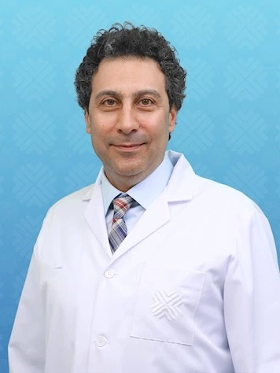
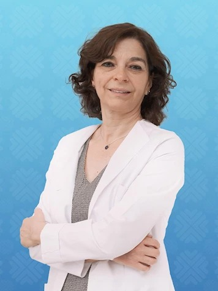
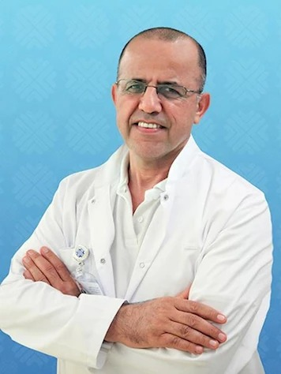
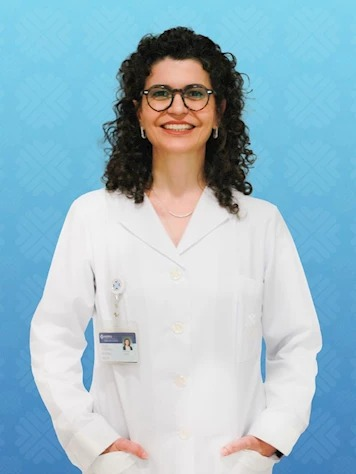
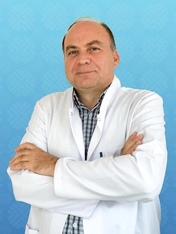

Hastanemizdeki alanında uzman değerli kadromuz aşağıda yer almaktadır.
|  | ||
|---|---|---|
| Prof.Dr.
Abdulkadir Faruk HÖKENEK Kalp Damar Cerrahisi |
Prof.Dr.
Abdulkadir ÖMER Endokrinoloji ve Metabolizma Hastalıkları |
Prof.Dr.
Bülent ERKURT Üroloji |
|  |  | |
|---|---|---|
| Prof.Dr.
Ayda TÜRKÖZ
Anestezi ve Reanimasyon |
Prof.Dr.
Ali MERT İç Hastalıkları |
Prof.Dr.
Alev ÖZSOY Diş Hekimi |
|  | ||
|---|---|---|
| Prof.Dr.
Arzu YÜKSELEN Çocuk Gelişimi |
Prof.Dr.
Huriye Ayşe PARLAKGÜMÜŞ Kadın Hastalıkları ve Doğum |
Prof.Dr.
Ali BALEVİ Dermatoloji |
|  | ||
|---|---|---|
| Prof.Dr.
Didem SERİN Göz Hastalıkları |
Klinik Psikolog
Fahriye Nuşin AKBAŞ Psikolog |
Prof.Dr.
Fevzi Sefa DEREKÖY Kulak Burun Boğaz Hastalıkları |